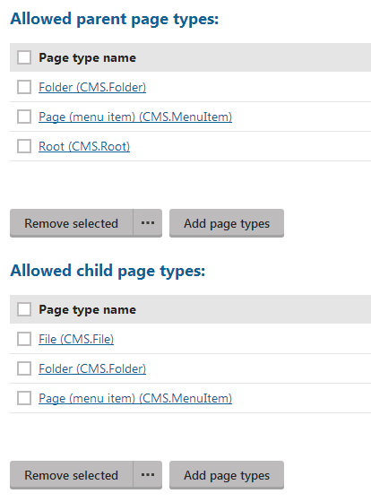
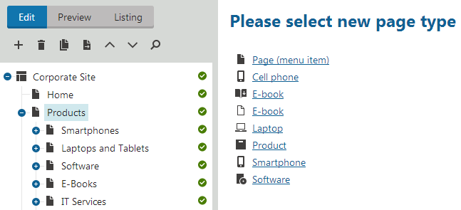
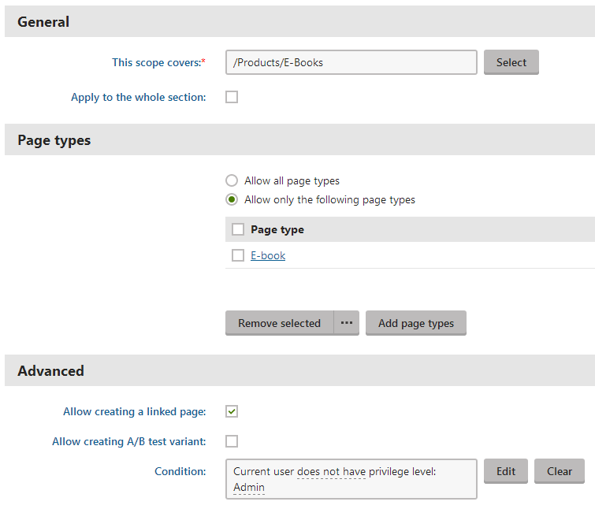
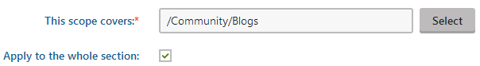
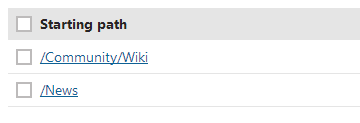

Limiting the pages users can create
This topic explains how you can make creating new pages more intuitive for editors on your site. You can also use the same functionality to control which pages are created in certain sections of the site and under certain page types in general. There are two complementary ways how you can achieve this:
Allowed page types - define which page types users can place under the current page type. This is a general setting that doesn't take into account the path that users place the page types under.
Page type scopes - define which page types users can use when creating new pages under specified paths. You can use scopes to distinguish certain sections of the website and restrict the pages that users can create in them.
Allowing users to place certain pages under a page type
You can control which page types users can create under a specific page type. Do that by adding allowed types to a page type. For example, you may want to allow users to only create File (CMS.File) page types under Folder (CMS.Folder) page types. This rule then applies everywhere on the site.
Defining allowed child page types
Open the Page types application.
Edit (
 ) the page type under which you want to specify allowed page types.
) the page type under which you want to specify allowed page types.Switch to the Allowed types tab.
Under Allowed child page types, click Add page types. A Select page types dialog opens.
Turn the check-box on next to the page types that you want to add to the allowed child page types.
Confirm by clicking OK.
You have added allowed child page types.
When you add an allowed child page type, the system also automatically adds an allowed parent page type to the child page that you are allowing.

Allowed parent and child page types
Specifying which pages users can create under certain paths
You can use page type scopes to narrow the number of page types that users can use when they create new pages under specified paths. This makes creating new pages more intuitive, especially if you have many page types in the system. For example, on the sample Corporate site, you may want users to only create E-Book (CMS.Ebook) page types under the /Products/Books/ path.
In this section, you can learn about:

Creating a new page under a page type scope
Creating a new page under a page type scope
Creating page type scopes
Open the Page types application.
Switch to Scopes.
In the Site drop-down list, select the site under which you want to create a new page type scope.
Click on New scope.
Specify the path the scope applies to in the This scope covers field. You can type the path in or use the Select button.
Specify the rest of the parameters.
Save the page type scope.
You have now created a new page type scope.

Page type scope allowing users to create a single page type under a specified path
Managing page type scopes
In this section, you can learn about:
Limiting multiple page types to a specific scope – Use to add multiple page types to a single page type scope.
Limiting a page type to multiple scopes – Use to add a page type to multiple different page type scopes.
Removing multiple page types from a scope – Use to remove multiple page types from a single page type scope.
Removing a page type from multiple scopes – Use to remove a single page type from multiple page types at once.
Limiting multiple page types to a specific scope
Use this method if you want to assign multiple page types to a single page type scope. To assign a page type to multiple different page types scopes, use this method.
Open the Page types application.
Switch to Scopes.
In the Site drop-down list, select the site under which you want to add page types to an existing page type scope.
Edit (
) the page type scope.Enable the Allow only the following page types check-box.
Click on Add page types. The Select page types dialog opens.
Turn the check-box on next to the page types that you want to add.
Confirm by clicking OK.
Save the page type scope.
You have assigned page types to a page type scope.
Limiting a page type to multiple scopes
Use this method if you want to assign a page type to multiple different page types scopes. To assign multiple page types to a single page type scope, use this method.
Open the Page types application.
Edit (
) the page type to which you want to assign page type scopes.Switch to the Scopes tab.
Click on Add to scopes. The Select scopes dialog opens.
Turn the check-box on next to the page type scopes that you want to assign to the page type.
Confirm by clicking OK.
You have assigned page type scopes to a page type.
Removing multiple page types from a scope
Use this method if you want to remove multiple page types from a single page type scope. To remove multiple page type scopes from a page type, use this method.
Open the Page types application.
Switch to Scopes.
In the Site drop-down list, select the site under which you want to remove page types from an existing page type scope.
Edit (
) the page type scope.Turn the check-box on next to the page types that you want to remove.
If you want to remove all page types from the page type scope at once, click on (...) and choose Remove all.
Click on Remove selected.
Confirm by clicking OK.
Save the page type scope.
You have removed page types from a page type scope.
Removing a page type from multiple scopes
Use this method if you want to remove a page type from multiple page type scopes at once. To remove multiple page types from a single page type scope, use this method.
Open the Page types application.
Edit (
) the page type from which you want to remove page type scopes.Switch to the Scopes tab.
Turn the check-box on next to the page type scopes that you want to remove from the page type.
Click on Remove selected.
Confirm by clicking OK.
You have removed page type scopes from a page type.
Viewing which pages are users allowed to create under a specific page type
To list the pages users are allowed to create under a page type:
Open the Page types application.
Edit (
) the page type under which you want to view which pages are users allowed to create.Switch to the Allowed types tab.
You have listed the page types users can create under a specific page type.
Allowed parent and child page types
Viewing which pages are users allowed to create under a specific path
To list the pages that users are allowed to create under a page type scope:
Open the Pages types application.
Switch to Scopes.
In the Site drop-down list, select the site under which you want to view which pages are users allowed to create under a specific path.
Edit (
) the page type scope(s) covering the path.
You have viewed the pages that users are allowed to create under a specific path.
Note that some page type scopes can cover not only their specified paths, but all their child pages as well. This is indicated by an enabled Apply to the whole section option.

Document type scope covering a whole section
Viewing under which paths are users allowed to create a page
You can view under which paths users are allowed to create a certain page type. To do that, list the page type scopes the page type is assigned to:
Open the Page types application.
Edit (
) the page type for which you want to list the page type scopes.Switch to the Scopes tab.
In the Site drop-down list, select the site under which you want to list the page type scopes.
You have listed the page type scopes to which a page type is assigned.

Document type included in scopes